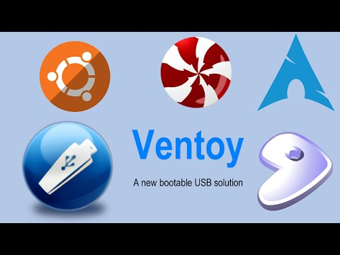
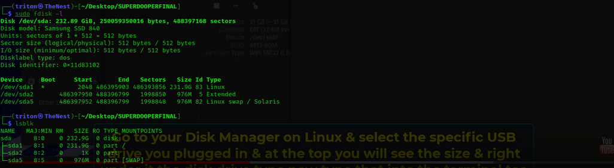

: : VENTOY - ΜΑΚΡΑΝ ΤΟ ΚΑΛΥΤΕΡΟ...

ΤΟ ΠΡΟΓΡΑΜΜΑ ΤΟΥ ΚΑΘΕ ΛΙΝΟΥΞ USER ΚΑΙ ΟΧΙ ΜΟΝΟ!!
Γειά χαρά!
Η συγκεκριμένη ανάρτηση αφορά ένα από τα καλύτερα προγράμματα που έχω συναντήσει ποτέ:
VENTOY
Το Ventoy, είναι ένα λογισμικό ΑΝΟΙΧΤΟΥ ΚΩΔΙΚΑ, το οποίο λειτουργεί σε σύστημα Λινουξ αλλά και Window$, και η χρησιμότητά του έγκειται
στην δημιουργία ενός multiboot usb flash. Για όσους δεν γνωρίζουν τί είναι το τελευταίο, ακόμα κι αν ασχολούνται με Λίνουξ (γιατί και 'γω
δεν ήξερα όταν το πρωτοάκουσα...), ας πούμε ότι ένα multiboot usb είναι ένα usb στικάκι, το οποίο όμως χρησιμεύει ως μέσο από το οποίο
μπορούμε να εκκινήσουμε (boot), πολλά (multi) λειτουργικά συστήματα. Ασφαλώς, για εμάς τους λινουξάδες που έχουμε δοκιμάσει - και μας αρέσει
ακόμα να το κάνουμε - διάφορες διανομές ανάλογα με τα γούστα μας, κάτι τέτοιο είναι πολύ πολύ χρήσιμο.
Γιατί όμως Ventoy και όχι κάποιο άλλο?
Θα πω μονάχα το εξής: Καμμία σχέση με οποιοδήποτε άλλο ομοειδές προγραμμα που υπήρξε ή που συνεχίζει να υπάρχει. Διότι:
Α. ΜΙΑ ΜΟΝΟ ΦΟΡΑ γίνεται η εγκατάσταση του προγράμματος στο usb. Αυτή η διαδικασία δεν θα ξαναενοχλήσει ποτέ ξανά τον χρήστη άμεσα ή έμμεσα.
Β. Άπαξ και γίνει η εγκατάσταση του προγράμματος, λειτουργεί πολύ απλά με ένα drag 'n drop των αρχείων .iso ΕΙΤΕ ΣΕ ΛΙΝΟΥΞ ΕΙΤΕ ΣΕ WINDOW$!!!
Τόσο απλά!
Το μικρό αυτό "δωράκι" το πήρα από ένα site το οποίο συνηθίζει να κάνει τέτοια ..."δωράκια γνώσης και πληροφορίας",
γι'αυτό και παραθέτω παρακάτω το λινκ ως ευκαιρία για τον αναγνώστη να εμβαθύνει σε έναν πραγματικό ωκεανό γνώσης:
https://cerebrux.net/2021/01/04/ventoy-multiboot-usb-windows-linux/
Εδώ κι ένα μικρό tutorial για την εγκατάστασή του σε περιβάλλον Λινουξ:
Ασφαλώς στο 1:45 του βίντεο, την θέση του usb μπορούμε να την βρούμε χρησιμοποιώντας και τις γνωστές εντολές μας στο τερματικό με "sudo fdisk -l" αλλά και "lsblk". Προτιμότερη η πρώτη για αρχάριους καθώς δείχνει όλο το path.

Καλές δοκιμές!!